Main Stage
第一舞台 · 文艺演出Main Stage Performances
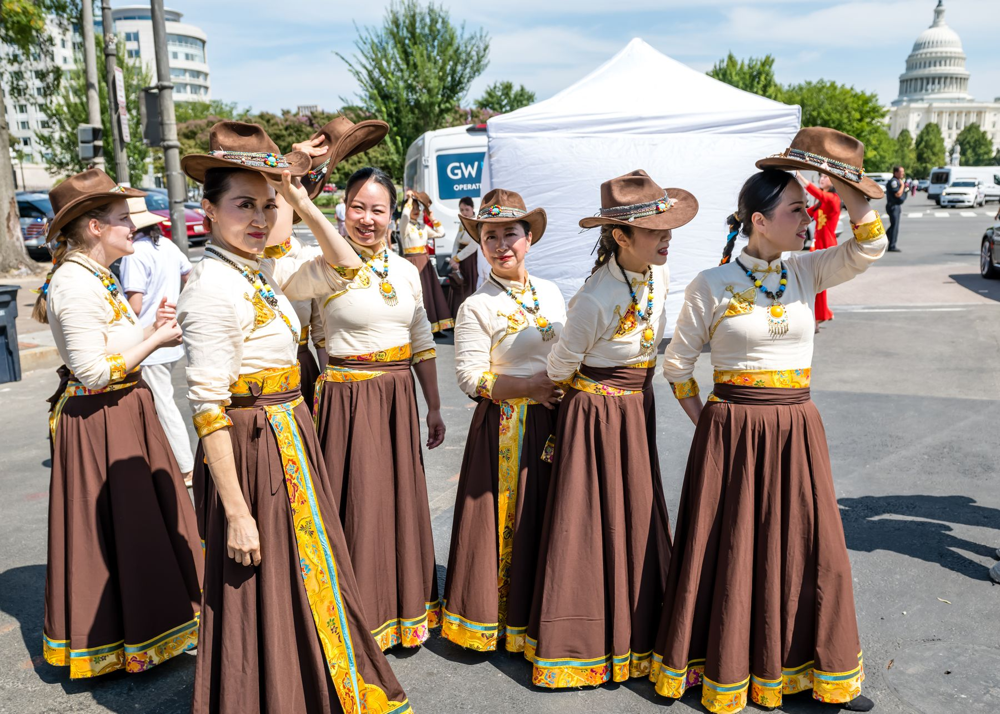
一场极致的视听盛宴，带着独有中国符号的文艺演出从上午持续到下午，总时长超过7个小时。演出在服装、色彩上将时尚元素和中国各民族元素相融合，器乐、舞蹈、唱歌、武术等节目穿插进行。中华传统少林功夫、武术、舞龙舞狮、打腰鼓等颇具民族特色的节目，吸引数万游客驻足等待，掌声欢呼声此起彼伏。
A feast for the eyes and ears: performances rich in Chinese symbolism run from morning to late afternoon, more than seven hours in total. Costumes and colors blend contemporary style with the traditions of China’s many ethnic groups, mixing instrumental music, dance, song and martial arts. Shaolin kung fu, dragon and lion dances and waist-drum performances draw crowds of thousands and waves of applause.
2027 演出时间：2027 show hours: 待定（往届为上午10点至下午5点）TBD (past years: 10 am to 5 pm)
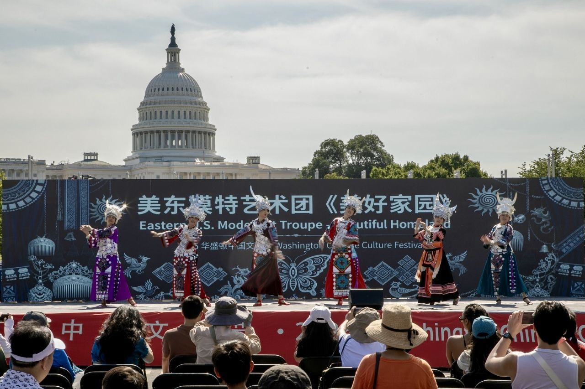
国会山前的第一舞台 · 第二十四届（2026）Main stage in front of the Capitol · 24th festival (2026)
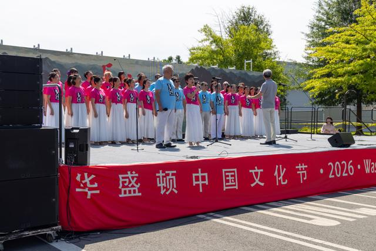

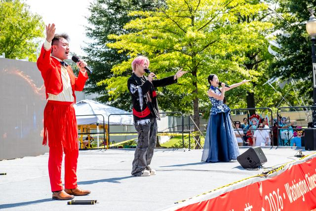
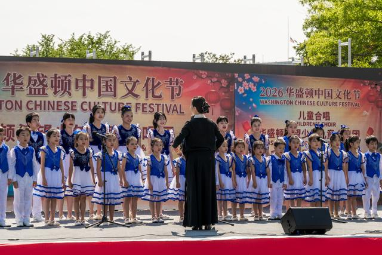
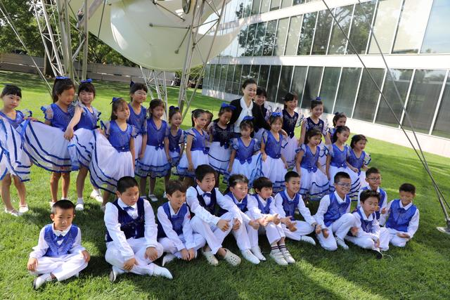
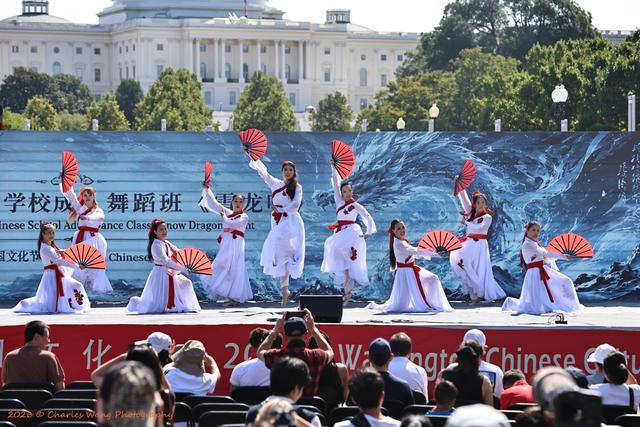
Interactive Stage & Parade
第二舞台 · 互动区 · 文化大游行Interactive Stage & Culture Parade
第二舞台及文化大游行板块延续广受欢迎的互动体验，以“Experience China”为主题的趣味互动区，成为游客广泛参与、感受中华文化魅力的重要平台。除了乒乓球、踢毽子、跳绳、武术、呼啦圈等喜闻乐见的项目，还有富有中华少数民族特色的互动体验：东北秧歌热闹喜庆，大家可以跟着节奏学转手绢、抛手绢；云南打歌舞、广西竹竿舞、新疆舞灵动欢快，游客跟随现场音乐边唱边跳。
The interactive stage and culture parade continue the festival’s most popular hands-on experiences. The “Experience China” fun zone invites visitors to join in table tennis, shuttlecock kicking, jump rope, martial arts and hula hoops, along with ethnic folk activities: twirling handkerchiefs to Northeastern yangge, and dancing along to Yunnan dage, Guangxi bamboo-pole and Xinjiang dances.
文化大游行由数十个同乡会、校友会、中文学校和艺术团体组成方阵，身着民族服饰沿宾夕法尼亚大道巡游。
The culture parade brings together dozens of hometown associations, alumni groups, Chinese schools and arts troupes, marching in traditional costume along Pennsylvania Avenue.
2027 游行方阵报名：2027 parade group sign-up: 待开放Opening soon
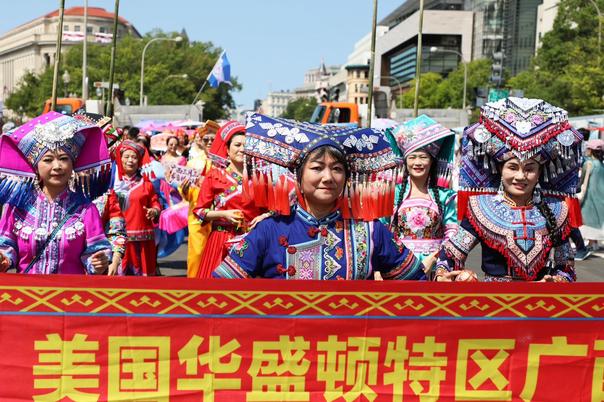
文化大游行 · 第二十四届（2026）Culture parade · 24th festival (2026)
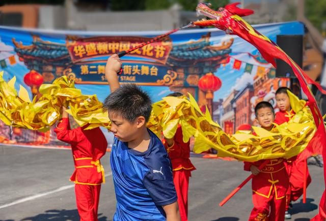
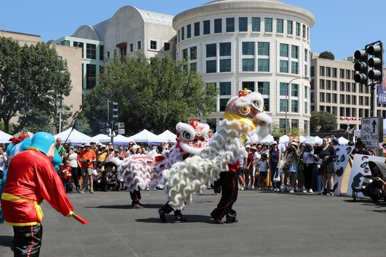
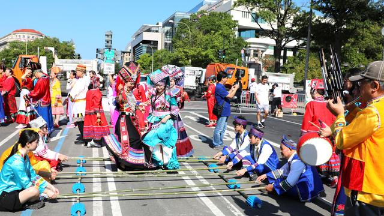

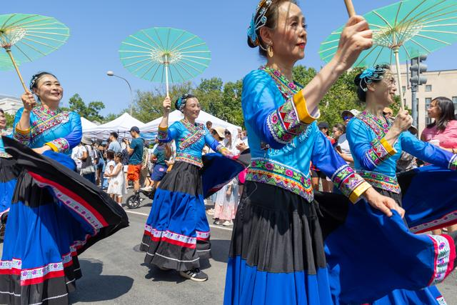
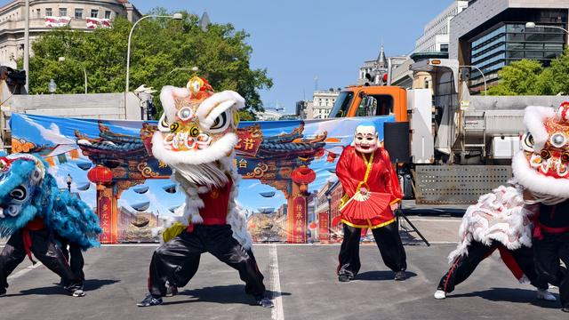